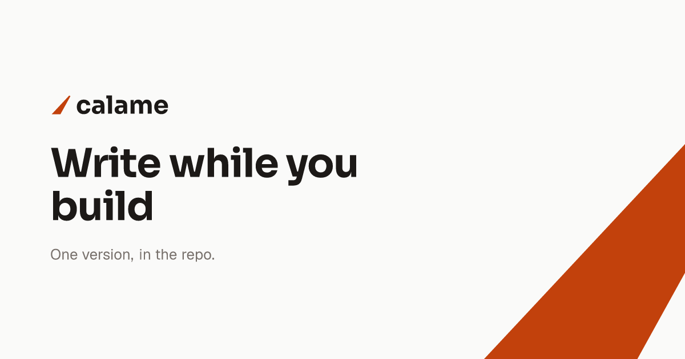
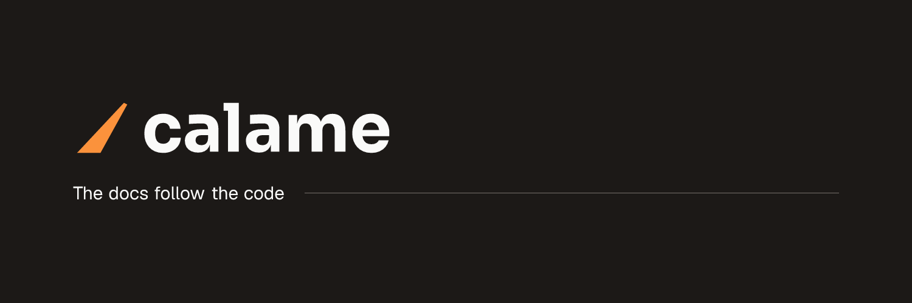
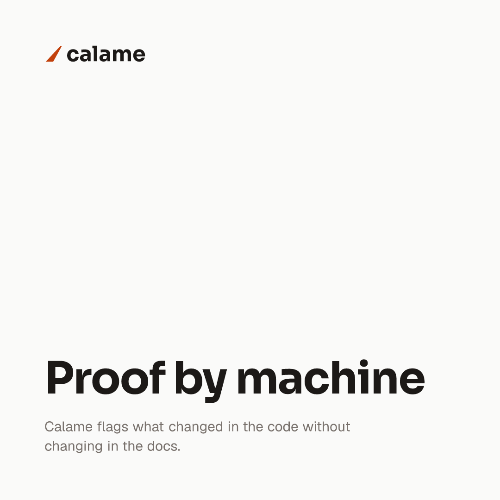
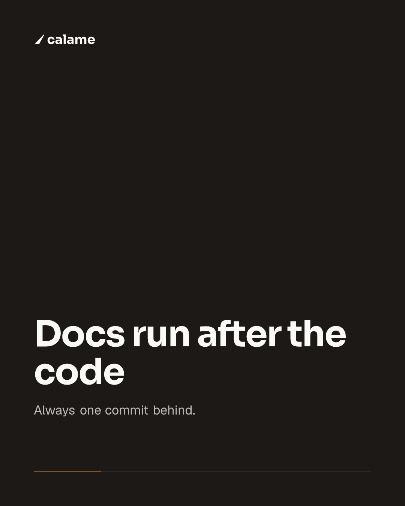
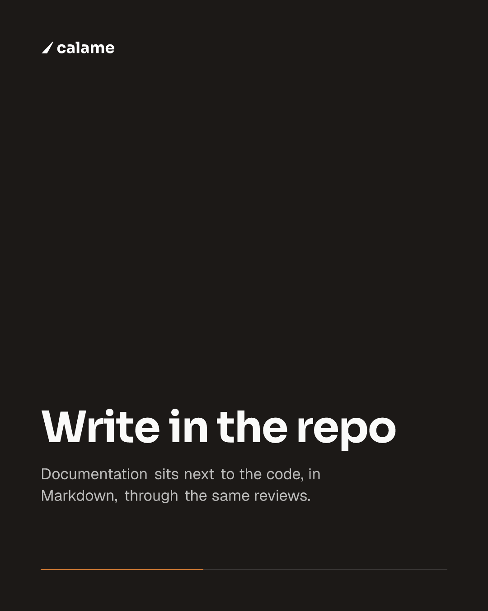
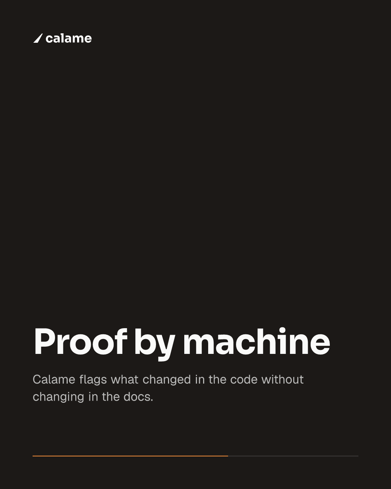
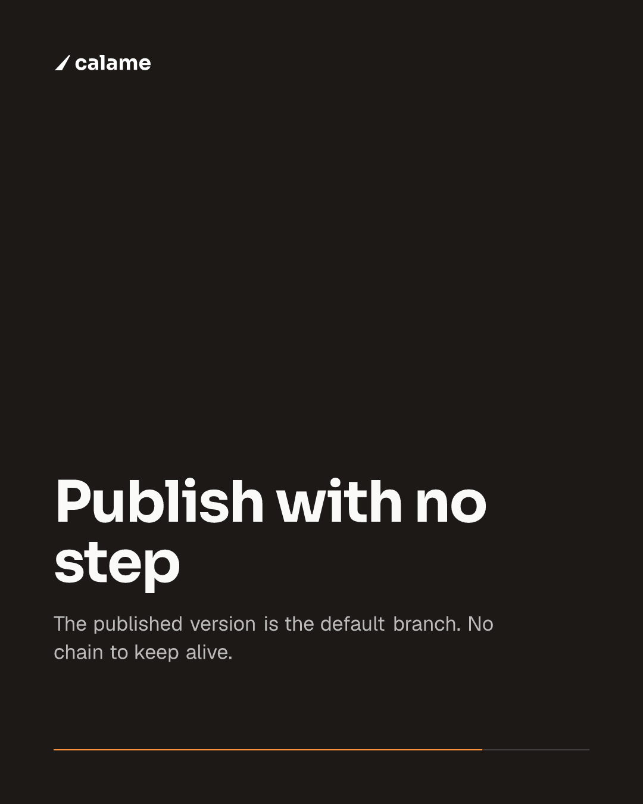
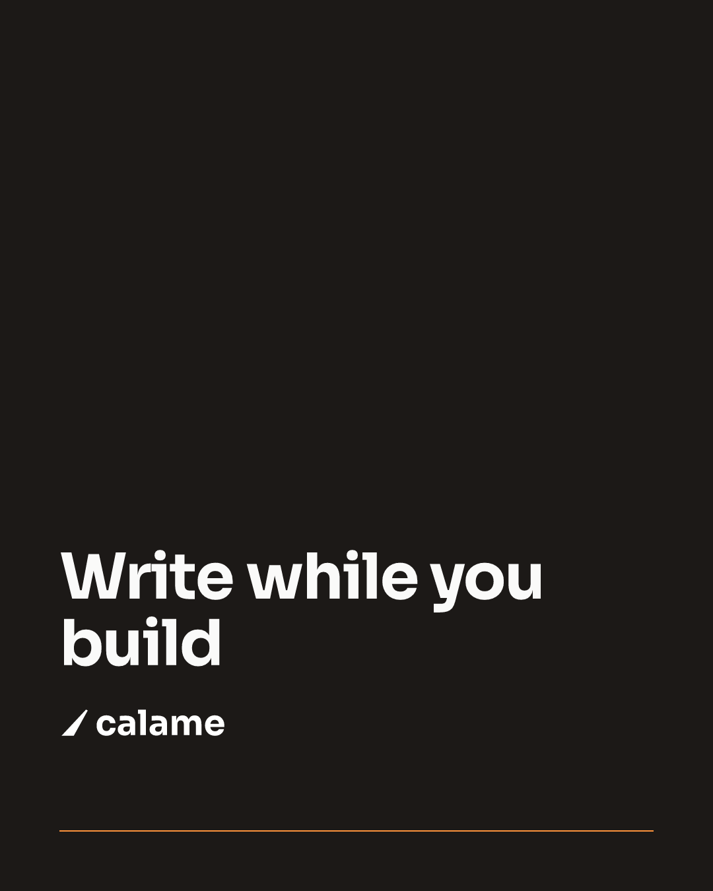

If you can write a React component, you already know how to make your visuals. BrandArtisan turns JSX into PNGs: Open Graph images, LinkedIn, Facebook and X posts, banners, carousels. No Figma, no browser, no server: your visuals are code, versioned with everything else.
$npx create-brand-artisan my-visuals
import type { Template } from "brand-artisan"; const SIZE = { width: 1200, height: 630 }; // Open Graph const INK = "#1c1917"; // brands/calame/brand.md function render() { return ( <div style={{ display: "flex", height: "100%", color: INK }}> <div style={{ fontFamily: "Sora", fontSize: 70 }}> Write while you build </div> </div> ); } export default { size: SIZE, render } satisfies Template;

out/calame/calame-share-preview.png · 1200 × 630 · source abridged, full file
Under the hood it is Satori + resvg, the next/og engine taken out of its Next
wrapper: JSX → SVG → PNG. react only provides the JSX runtime; there
is no react-dom and no client-side rendering.
Nothing headless to install, boot, or keep in step with CI. Rendering is a plain Node process.
No file to open, export and re-upload by hand. A visual is a .tsx you diff, review
and revert like any other file.
Nothing to deploy or pay for. Images are built once, land in out/, and are yours to
upload anywhere.
A .tsx under templates/<project>/ default-exports a
Template. There is no registry to edit: dropping the file in is the whole registration.
my-visuals/ ├─ brands/calame/ guidelines: brand.md, project.md ├─ templates/calame/ the visuals: one .tsx, one image │ ├─ og.tsx │ ├─ banner.tsx │ └─ linkedin-carousel/ a folder of slides → one PDF ├─ tools/calame/ logo and favicon generators ├─ fonts/ Sora-700.ttf, Geist-400.ttf… └─ out/ what you upload
display: flex. That single rule causes most render
errors.npm run dev serves a browsable preview at
localhost:4000. Every visual gets its own URL, like Next routes, and re-renders
on each refresh, the files it imports included.
npm run build exports everything to
out/<project>/, ready to upload.
localhost:4000/ lists the projects localhost:4000/calame/og preview page localhost:4000/calame/og?raw the raw PNG
These are the demo brand’s own templates, rendered by npm run build,
not mockups, not screenshots of a design tool. Clone the repository and you get the same files back.
og.tsx · 1200 × 630 · Open Graph

banner.tsx · 1500 × 500 · 3:1 header

card.tsx · 1080 × 1080 · square post
Each slide renders to its own PNG, which is what a carousel ad takes. An organic LinkedIn carousel is another animal: the swipeable one in the feed is a document post, and what you upload is a single PDF that LinkedIn paginates into slides. The same images attached to a post come out as a mosaic of thumbnails instead.
$ npm run pdf -- calame/linkedin-carousel ✓ out/calame/linkedin-carousel.pdf
card-2 before card-10.





One project, one set of guidelines: its reference in
brands/<project>/, its visuals in templates/<project>/.
Palette, logotype, typography, do and don’t. Blocking: nothing gets composed without it. This is what stops humans and AI alike from inventing a color or rebuilding a logo by eye.
Pitch, audience, value proposition, editorial voice, and the claims that are allowed. Read before a single word goes onto a visual, so no figure gets made up.
A separate toolchain generates what a template cannot: an SVG logotype traced from the
font’s glyphs, multi-size favicons, .ico. Each script runs on its own, into
out/<project>/brand/.
Phones, tablets, laptops, TVs and a few industry terminals, each carrying the exact coordinates of its screen, so a mockup sits inside a visual with nothing left to eyeball.
screen: 3456 × 2170 @ 394, 130, from the catalog, not from the eye
frame(slug, width) scales a frame and its screen area
together: you give a width, you get back the picture and the rectangle to draw into. The outline
on the frame is not eyeballed for this page: it is that catalog entry, drawn from the same
numbers.
"apple-macbook-pro-16-2021": { image: { width: 4244, height: 2594 }, viewport: { width: 1728, height: 1085 }, screen: { x: 394, y: 130, width: 3456, height: 2170, radius: 0 }, }
The frames do not ship with the engine: copy
assets/devices/ into your project, and read its NOTICE.md first: it covers the scale: 2 rule
that keeps edges clean, and the rights, since most of these devices carry registered trademarks.
BrandArtisan ships skills: each platform’s official dimensions, its safe zones, and the nothing-outside-the-guidelines discipline. They install into whichever agent you use: Claude Code, Cursor, Copilot and twenty-odd others.
$npx skills add roslove44/brand-artisan -s "*" -y
/new-project my-brandSets up the guidelines through an
interview./import-referenceDerives the guidelines from your existing visuals,
measured to the pixel rather than guessed./og-image my-brandA 1200 × 630 Open Graph image./linkedin-post, /x-post…Visuals cut to each platform’s specs:
posts, page headers, carousels./campaign my-brandA multi-platform kit from a single brief.
/brand-assets my-brandGenerates the logo, the favicon and their
variants.The agent reads your guidelines, asks the questions it is missing, and
produces verifiable .tsx files: npm run typecheck,
npm run build. Everything can still be done by hand. AI is an accelerator, not a
requirement.
Commands work from any subfolder of the project.
THE CLI
devRender server at localhost:4000.
buildExports templates/ to out/.
pdf <folder>Assembles a folder of slides into a PDF.
colors <image>An image’s palette, measured rather than
guessed.
THE API
type TemplateA visual’s contract:
{ size, title?, render }. scale: 2 for retina.
brand(path)Absolute URL into brands/, ready for
readFile.
root(path)Resolved from the project root.
toPng(node, size)JSX → PNG, as a Buffer.
renderToFile(…)The same, but writes
out/<out>.png.
Two subpaths for brand tooling:
brand-artisan/brandkit (glyph outlines, SVG → PNG, .ico) and
brand-artisan/colors (palette and painted-area measurement).
The generated project holds only your brand: guidelines,
visuals, asset scripts, fonts. The engine lives in node_modules and updates with
npm update. A complete example ships with it: Calame, the fictional brand you have been
looking at all the way down this page.
$npx create-brand-artisan my-visuals